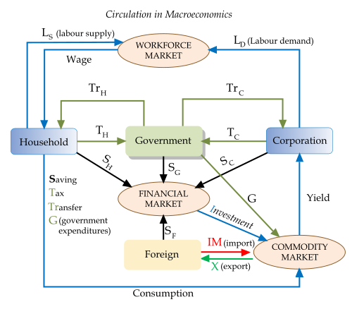

Table of Contents
1. Principles of Economics
1.1. The Study of Economics
1.1.1. The Magic of the Economy
1.1.2. Is Economics a Science?
1.2. Individual Decision Making
1.2.1. Scarcity Leads to Tradeoffs and Choice
1.2.2. Individuals Face Opportunity Costs
1.2.3. Individuals Make Decisions at the Margins
1.2.4. Individuals Respond to Incentives
1.3. Interaction of Individuals, Firms, and Societies
1.3.1. Introducing the Firm
1.3.2. Trade Leads to Gains
1.3.3. Thinking about Efficiency
1.3.4. The Function and Nature of Markets
1.3.5. Markets are Typically Efficient
1.3.6. Government Intervention May Fix Inefficient Markets
1.3.7. Full Economy Interactions
1.4. Basic Economic Questions
1.4.1. Production Outputs
1.4.2. Production Inputs and Process
1.4.3. Production Recipients
1.4.4. Differences Between Centrally Planned and Market Economies
1.4.5. Mixed Economies
1.5. Economic Models
1.5.1. Math Review
1.5.2. Assumptions
1.5.3. Hypotheses and Tests
1.5.4. Economic Models
1.5.5. Normative and Positive Economics
1.6. Differences Between Macroeconomics and Microeconomics
1.6.1. Macroeconomics
1.6.2. Microeconomics
1.6.3. Key Differences
1. Principles of Economics
1.1. The Study of Economics
1.1.1. The Magic of the Economy
The study of economics makes individuals cognizant of their environment and better decision makers.
Learning Objective
Explain how the study of economics provides knowledge to understand the system and policies that guide life.
Key Points
- Economics also allows individual agents to balance expectations.
- Economics provides distilled frameworks to analyze complex societal interactions, as in the case of consumer and firm behavior.
- Being knowledgable about economics foundations allows an individual to be an active and aware participant rather than a passive economic agent.
Key Terms
- circular flow
- A model of market economy that shows the flow of dollars between households and firms.
- externality
- An impact, positive or negative, on any party not involved in a given economic transaction or act.
Economics is a social science. This means that economics has two important attributes. Economics studies human activities and constructions in environments with scarce resources, and uses the scientific method and empirical evidence to build its base of knowledge.
The evaluation of human interactions as it relates to preferences, decision making, and constraints is a significant foundation of economic theory. The complexity of the dynamics of human motivation and systems has led to the establishment of assumptions that form the basis of the theory of consumer and firm behavior, both of which are used to model circular flow interactions within the economy .
{kind=link}
Economics provides an accessible foundation for understanding the complexity of the interactions in the world. For example, the circular flow diagram displays the economic framework related to the dynamic interconnectedness of economic agents. In the graph above the display is limited to households and firms but other depictions of circular flow incorporate the government and international trading partners.
Economics provides distilled frameworks to analyze complex societal interactions, as in the case of consumer and firm behavior. An understanding of how wages and consumption flow between consumers and producers provides agents with an ability to understand the symbiosis of the relationship rather than fixating on the contentious components that surface from time to time.
Economics also allows individual agents to balance expectations. An understanding of the ebb and flow of the economy through the boom and bust of the business cycles, creates the potential for emotional balance by reminding agents to limit desperation in downturns and exuberance in expansions.
By developing an understanding of the foundations of economics, individuals can become better decision makers with respect to their own lives and maintain a balance with respect to an externality that has the potential to supplement or deter their plans. Since economic theories are a basis of decision making and regulatory policy, being knowledgable about economics foundations allows an individual to be an active and aware participant rather than a passive economic agent.
1.1.2. Is Economics a Science?
Economics is a social science that has diverse applications.
Learning Objective
Explain how economic theory and analysis can be applied throughout society
Key Points
- Economics incorporates both qualitative and quantitative assessment.
- Economics is divided into two broad areas: microeconomics and macroeconomics.
- Economics can be applied throughout society from business to individual behavior with further application in the study of crime, family and other social institutions and interactions.
Key Term
- social science
- A branch of science that studies the society and human behavior in it, including anthropology, communication studies, criminology, economics, geography, history, political science, psychology, social studies, and sociology.
Example
- Market interaction between buyers and sellers is an evaluation of social behavior in an activity where each agent is seeking to maximize return and minimize cost. This is a classic scenario of economics, involving social interaction (qualitative) with optimization (quantitative).
Economics is a social science that assesses the relationship between the consumption and production of goods and services in an environment of finite resources. A focus of the subject is how economic agents behave or interact both individually (microeconomics) and in aggregate (macroeconomics).
Microeconomics examines the behavior individual consumers and firms within the market, including assessment of the role of preferences and constraints. Macroeconomics analyzes the entire economy and the issues affecting it. Primary focus areas are unemployment, inflation, economic growth, and monetary and fiscal policy.
The discipline of economics evolved in the mid-19th century through the combination of political economy, social science and philosophy and gained entrenchment with the increased scrutiny of the asymmetric financial and welfare distribution attributed to sovereign rule. Early writings are attributable to Jeremy Bentham, David Ricardo, John Stuart Mill and his son John Mill and are focused on human welfare and benefits rather than capitalism and free markets .
John Stuart Mill, along with David Ricardo, Jeremy Bentham and other political and social philosophers of the mid-nineteenth century are credited with the founding of the social-political theory that has evolved to be the discipline of economics.
As in other social sciences, economics does incorporate mathematics in the theoretical and analytics framework of the discipline. Formal economic modeling began in the 19th century with the use of differential calculus to represent and explain economic behavior, such as utility maximization, an early economic application of mathematical optimization in microeconomics. Economics utilizes mathematics to assess the relationships between economic actors in environments in which resources are finite.
The use of mathematics in economics increased the quantitative analysis inherent in the discipline; however, given the discipline's essentially social science roots, many economists from John Maynard Keynes to Robert Heilbroner and others criticized the broad use of mathematical models for human behavior, arguing that some human choices can not be modeled or evaluated in a mathematical equation.
Economic theory and analysis may be applied throughout society, including business, finance, health care, and government. The underlying components of economic theory can also be applied to variety of other subjects, such as crime, education, the family, law, politics, religion, social institutions, war, and science.
1.2. Individual Decision Making
1.2.1. Scarcity Leads to Tradeoffs and Choice
When scarce resources are used, actors are forced to make choices that have an opportunity cost.
Learning Objective
Give examples of economic trade-offs.
Key Points
- Scarce resources diminish as they are used and almost all resources are scarce.
- In order to use a scarce resource, you are inherently using the resource for one purpose and not an alternative.
- The cost of using a resource is called the opportunity cost: the value of the next best alternative that you could be using the resource for instead.
Key Terms
- Scarce
- Insufficient to meet demand.
- Opportunity cost
- The value of the best alternative forgone.
A fundamental concept in economics is that of scarcity. In contrast to its colloquial usage, scarcity in economics connotes not that something is nearly impossible to find, but simply that it is not unlimited. For example, the number of available hours in a day is a scarce resource: there is a finite amount of time available to you to do work, hang out with friends, and relax. Most resources are scarce in most situations.
Since resources tend to be scarce, anyone that uses the resource has to make a decision about how to use it. Suppose, for example, that you are a drink manufacturer. To produce a beverage, you have to use some scarce resources: the plastic for the bottle, the workers' time, a machine to fill the bottles, etc. If you choose to make one bottle of water, you have chosen to not make a bottle of soda . Your scarce resources force you to make a choice and a trade-off producing one product or another.
{kind=link}
Since resources are scarce for a drink manufacturer, it must make a tradeoff between producing bottles of water and bottles of soda.
Like producers, consumers also have to make choices. Often, consumer must choose between current consumption ("I want to buy an ice cream") and future consumption ("I should rather save my money so I can buy an ice cream tomorrow"). Since consumers' resources such as time, attention, and money are limited, they must choose how to best allocate them by making tradeoffs.
The concept of trade-offs due to scarcity is formalized by the concept of opportunity cost. The opportunity cost of a choice is the value of the best alternative forgone. In other words, if you can only produce bottles of soda and water, the opportunity cost of producing a bottle of water is the value of producing a bottle of soda. Similarly, there is an opportunity cost in everything: the opportunity cost of you reading this is what you could be doing with your time instead (say, watching a movie). When scarce resources are used (and just about everything is a scarce resource), people and firms are forced to make choices that have an opportunity cost.
1.2.2. Individuals Face Opportunity Costs
Individuals face opportunity costs when they choose one course of action over another.
Learning Objective
Distinguish between explicit costs and opportunity costs
Key Points
- The opportunity cost is the value of the next best alternative foregone.
- Every decision necessarily means giving up other options, which all have a value.
- The opportunity cost is the value one could have derived from using the same resources another way, though this is not always easily quantifiable.
Key Term
- Opportunity Costs
- The value of the best alternative forgone, in a situation in which a choice needs to be made between several mutually exclusive alternatives given limited resources.
When individuals make decisions, they are necessarily deciding between taking one course of action over another. In doing so, they are choosing both what to do and, by extension, what not to do. The value of the next best choice forgone is called the opportunity cost. In other words, the opportunity cost of a course of action is the value the of the option that the individual chose not to take.
Individuals face opportunity costs in both economic and non-economic decisions. One of the easiest way to imagine an individual's opportunity costs is to imagine a student who decides to study. By choosing to study, the student is implicitly choosing to not go to a party, hang out with friends, or catch up on some much-needed sleep . In this example, the opportunity cost is not easily expressed in dollars and cents, but is just as real.
By choosing to go to spend time and money on things like classes and computers, you are necessarily choosing not to spend it on something else, like going on vacation. This is an opportunity cost.
Rational individuals will try to minimize their opportunity costs. By doing so, individuals are maximizing the amount that they can get out of their resources (time, money, effort, etc.). This makes sense: individuals should seek to get the most and give up the least.
As economic actors, individuals face opportunity costs as well. For example, suppose you decide to purchase a new computer. You could have chosen to spend your money on books or rent or a spring break trip; whichever one of those options is most valuable to you (beside purchasing a new computer) is the opportunity cost.
Such logic applies for every economic decision: purchasing one good means that an individual has chosen to spend resources one way instead of another. Opportunity costs are an important consideration for economists and business people, but are faced by individuals even when they are not making classically economic decisions.
1.2.3. Individuals Make Decisions at the Margins
Individuals will choose the option that yields the greatest net marginal benefit.
Learning Objective
Apply the concepts of marginal analysis and utility to decision-making
Key Points
- The marginal cost or benefit is the amount that a decision will change the total cost or benefit from where it is currently.
- Individuals will make choice that maximizes the net marginal benefit (marginal benefit - marginal cost).
- While total or average cost and benefit are important, provided enough resources, individuals will look only at the net marginal benefit.
Key Terms
- marginal cost
- The additional cost from taking a course of action.
- marginal benefit
- The additional benefit from taking a course of action.
When individuals make decisions, they do so by looking at the additional cost and benefit of the decision. The cost or benefit of the single decision is called the marginal cost or the marginal benefit. This is different from the total or average: net marginal benefit (marginal benefit minus marginal cost) is the amount that total benefit will change due to the single decision. For example, if the cost of making 9 pieces of pizza is \$90 and the cost of making 10 pieces is \$110, the marginal cost of producing the tenth piece of pizza is \$20. In theory, individuals will only choose an option if marginal benefit exceeds marginal cost.
{kind=link}
Marginal utility is the amount that a certain action will change total utility. Individuals use net marginal utility to make decisions.
Let's take an example. Suppose you are buying a car and have three choices:
- Car A, which costs \$10,000
- Car B, which costs \$12,000
- Car C, which costs \$15,000
The prices represent the marginal costs of each car; purchasing the car will add the cost of the car to your total costs. Also suppose Car A provides you \$15,000 worth of utility, Car B provides \$15,000, and Car C provides \$25,000. Those utilities, in dollar terms, are the marginal benefit of each car.
In order to make the decision, you look at the marginal cost and marginal benefit of each car. By subtracting the cost from the benefit, Car A offers \$5,000 of marginal benefit, Car B offers \$3,000, and Car C offers \$10,000. Obviously, Car C is the best choice because, at the margins, it offers the most benefit to you.
Note that you are concerned not with your total or average cost and benefit (assuming no resource or other external restrictions), but with the marginal cost and benefit. As a decision maker, you want to know how much the decision will change your current state, so you look at the margins, not the overall picture. That is not to say that things like the total cost are unimportant, but that, assuming there are enough resources, individuals will look at the marginal change each option will provide to his/her life or to the firm and chose the one with the greatest net marginal benefit.
Marginal Benefits and Costs for Pollution
The tools of marginal analysis can illustrate the marginal costs and the marginal benefits of reducing pollution. When the quantity of environmental protection is low (quantity $Q_a$) and pollution is extensive, there are cheap and easy ways to reduce pollution, and the marginal benefits of doing so are quite high. At $Q_a$, it makes sense to allocate more resources to fight pollution.
However, as environmental protection increases, the cheap and easy ways of reducing pollution decrease, and pollution can only be reduced with costly methods. In other words, the largest marginal benefits are achieved first, followed by decreasing marginal benefits. As the quantity of environmental protection increases to $Q_b$, the gap between marginal benefits and marginal costs decreases. At point $Q_c$, the marginal costs will exceed the marginal benefits. At this level of environmental protection, society is not allocating resources efficiently, because too many resources are being given up to reduce pollution.
{kind=link}
Reducing pollution is costly—resources must be sacrificed. The marginal costs of reducing pollution are generally increasing, because the least expensive and easiest reductions can be made first, leaving the more expensive methods for later. The marginal benefits of reducing pollution are generally declining, because the steps that provide the greatest benefit can be taken first, and steps that provide less benefit can wait until later.
1.2.4. Individuals Respond to Incentives
Incentives are ways to encourage or discourage certain behaviors or choices.
Learning Objective
Predict how pay incentives will influence a person's work performance
Key Points
- Price is one of the main incentives studied in economics. Price incentivizes producers to supply a certain amount, and consumers to purchase a certain amount.
- Economics is mainly concerned with studying remunerative incentives (those that concern material reward).
- Individuals, firms, and governments all change incentives in hopes of encouraging desired outcomes.
Key Terms
- Incentive Structure
- The cumulative set of promised rewards and/or punishments that encourage actors to make a set of decisions.
- incentive
- Something that motivates an individual to perform an action.
An incentive is something that motivates an individual to perform an action. The study of incentive structures is central to the study of all economic activities (both in terms of individual decision-making and in terms of cooperation and competition within a larger institutional structure).
Perhaps the most notable incentive in economics is price. Price acts as a signal to suppliers to produce and to consumers to buy. For example, a sale is nothing more than a store providing an incentive to potential customers to buy. The lowering of the price makes the purchase a better idea for some customers; the sale seeks to persuade individuals to change their actions (namely, to buy the product).
Sales are incentives for consumers to buy, because firms know consumers generally respond to lower prices by purchasing more.
Similarly, the increase in price acts as an incentive to suppliers to produce more of a good. If suppliers think they can sell their products for more, they will be inclined to produce more. The price acts, therefore, as an incentive to customers to buy and suppliers to produce.
Types of Incentives
Incentives come in many other forms, however. Broadly, most incentives can be grouped into one of four categories:
- Remunerative incentives: The incentive comes in the form of some sort of material reward – especially money – in exchange for acting in a particular way. Wages, prices, and bribery are all examples of remunerative incentives. This is the type of incentive that is typically associated with economics.
- Moral incentives: This occurs when a certain choice is widely regarded as the right thing to do, or as particularly admirable, or where the failure to act in a certain way is condemned as indecent. Societies and cultures are two main sources of moral incentives.
- Coercive incentives: The incentive is a promise of some sort of punishment if the wrong decision is made. For example, the promise of imprisonment is a coercive incentive for people to not steal.
- Natural Incentives: Things such as curiosity, mental or physical exercise, admiration, fear, anger, pain, joy, the pursuit of truth, and a sense of control of people or oneself can cause individuals to make certain decisions.
Economics is mainly concerned with remunerative incentives, though when discussing government regulations, coercive incentives often come into play. By manipulating incentives, individuals (as well as businesses and governments) hope to encourage some behaviors and discourage others.
Incentives and Performance
Companies leverage incentives-based strategies to drive performance and optimize employee decision-making and behaviors through meaningful reward systems. While there are both advantages and drawbacks to this type of approach, remunerative (financial) incentives are highly attractive options for employers in a variety of industries and businesses. Providing incentives such as variable income, where an individual can obtain more personal rewards for successfully creating a product or making a sale, often drives up production for highly motivated employees.
An example of this would be a manufacturing facility making widgets. The floor manager shifts the wage system from an hourly wage perspective to a straight piece rate system. The more widgets a worker creates, the higher his or her prospective income will be. Under this incentive system less productive workers may stay the same, but highly productive workers will respond by increasing their production.
1.3. Interaction of Individuals, Firms, and Societies
1.3.1. Introducing the Firm
Firms allow an economy to operate more efficiently and reduce the transaction costs of coordinating production.
Learning Objective
Explain the importance of private companies and firms in the economy
Key Points
- Firms generally appear and become prevalent as an alternative to individual trade when it is more efficient to produce in a non-market environment.
- Limited liability separates the management of a firm from its ownership, allowing companies to raise money easily because owners do not need to risk everything in the case of bankruptcy.
- Most industries experience increasing returns to scale up to a point, which means that more goods can be produced using fewer resources.
- According to Ronald Coase, the main reason to establish a firm is to avoid some of the transaction costs of using the price mechanism.
Key Terms
- increasing returns to scale
- The characteristic of production in which output increases by more than the proportional increase in inputs.
- firm
- A business enterprise, however organized.
"Firm" is simply another word for company or business. The basic economic marketplace consists of transactions between households and firms. Firms use factors of production - land, labor, and capital - to produce goods that are consumed by households. They may be organized in many different ways - corporations, partnerships, sole proprietorships, and collectives are all examples of firms. Economists who study the theory of the firm attempt to describe, explain, and predict the nature of a firm, including its existence, behavior, structure, and relationship to the market.
The Evolution of the Firm
Not all markets and societies involve firms. In many medieval cities, most production was done by individual craftsmen who were loosely organized into guilds, or by tenant farmers who rented family-sized plots of land. Transactions took place primarily between individuals.
Firms generally appear and become prevalent as an alternative to individual trade when it is more efficient to produce in a non-market environment. For example, in a labor market, it might be too difficult or costly for firms or organizations to engage in production when they have to hire and fire their workers depending on demand/supply conditions. While the advantages of consolidation for efficiency are potentially many and varied, the underlying concept is that integrating operational paradigms enables potential synergy via the construct of a firm.
Firms also allow economic growth, not only for the firm but for the broader society in which it resides. Through separating the business from the individual(s) who starts it, the funding, insurance and liability of a firm can function independently of a person. The separation of a firm from the individual also allows more specifically applicable regulations and laws, broader accumulation of investment capital and more complex strategic alliances. While the detailed implications of a firm and it's relationship with individuals and society are complex, the important takeaway is that firms play an integral role in economic structure.
The Transaction Theory of the Firm
According to Ronald Coase, people begin to organize their production in firms when the transaction cost of coordinating production through the market exchange is greater than within the firm. He notes that a firm's interactions with the market may not be under its control (for instance because of sales taxes), but its internal allocation of resources are: "Within a firm, … market transactions are eliminated and in place of the complicated market structure with exchange transactions is substituted the entrepreneur … who directs production." He asks why alternative methods of production (such as the price mechanism and economic planning), could not either achieve all production, so that either firms use internal prices for all their production, or one big firm runs the entire economy.
For Coase the main reason to establish a firm is to avoid some of the transaction costs of using the price mechanism. These include discovering relevant prices (which can be reduced but not eliminated by purchasing this information through specialists), as well as the costs of negotiating and writing enforceable contracts for each transaction (which can be large if there is uncertainty). Moreover, contracts in an uncertain world will necessarily be incomplete and have to be frequently re-negotiated. The costs of haggling about division of surplus, particularly if there is asymmetric information and asset specificity, may be considerable. Organization into a firm can considerably reduce these costs.
1.3.2. Trade Leads to Gains
Producers and consumers trade because the exchange makes both parties better off.
Learning Objective
Explain why parties trade.
Key Points
- The benefit of exchange to producers is measured by the profit the producer makes. The benefit of exchange to a consumer is measured by net utility gained.
- Consumer surplus is the monetary gain obtained by consumers because they are able to purchase a product for a price that is less than the highest price that they would be willing to pay.
- Producer surplus is the amount that producers benefit by selling at a market price that is higher than the least that they would be willing to sell for.
- An allocation of resources is Pareto efficient when it is impossible to make any one individual better off without making at least one individual worse off.
Key Terms
- utility
- The ability of a commodity to satisfy needs or wants; the satisfaction experienced by the consumer of that commodity.
- consumer surplus
- The difference between the maximum price a consumer is willing to pay and the actual price they do pay.
- producer surplus
- The amount that producers benefit by selling at a market price that is higher than the lowest price at which they would be willing to sell.
Producers and consumers trade because the exchange makes both parties better off. The benefit of exchange to producers is measured by the amount of profit – that is, the difference between the average cost of producing an item and the price received for that item. The benefit of exchange to a consumer is measured by net utility gained. This is measured by taking the difference between the maximum price a consumer is willing to pay and the actual price they do pay. To understand this, imagine purchasing a car. You would be willing to pay up to \$15,000 for a car in good condition, but you are able to buy one for only \$12,000. Since you value the car at \$3,000 more than you paid for it, \$3,000 is the benefit that you gained from the transaction.
Economists refer to these benefits from exchange as producer and consumer surplus. Consumer surplus is the monetary gain obtained by consumers because they are able to purchase a product for a price that is less than the highest price that they would be willing to pay. Producer surplus is the amount that producers benefit by selling at a market price that is higher than the least that they would be willing to sell for.
The amount of consumer and producer surplus that is gained from a transaction can be seen on a standard supply and demand graph. Consumer surplus is the area (triangular if the supply and demand curves are linear) above the equilibrium price of the good and below the demand curve. This reflects the fact that consumers would have been willing to buy a single unit of the good at a price higher than the equilibrium price, a second unit at a price below that but still above the equilibrium price, etc., yet they in fact pay just the equilibrium price for each unit they buy.
Likewise, in the supply-demand diagram, producer surplus is the area below the equilibrium price but above the supply curve. This reflects the fact that producers would have been willing to supply the first unit at a price lower than the equilibrium price, the second unit at a price above that but still below the equilibrium price, etc., yet they in fact receive the equilibrium price for all the units they sell. The sum of consumer and producer surplus is called economic, or social, surplus, and reflects the total amount of benefit received by society when consumers and producers trade.
{kind=link}
Consumer surplus is the area between the demand line and the equilibrium price, and producer surplus is the area between the supply line and the equilibrium price.
Exchange and Pareto Optimality
An allocation of resources is Pareto efficient when it is impossible to make any one individual better off without making at least one individual worse off. For example, imagine that two individuals prefer peanut butter and jelly sandwiches to a sandwich with only peanut butter or only jelly. A distribution in which Individual A has all of the peanut butter and individual B has all of the jelly is not Pareto efficient, because both parties would be better off if they shared their resources.
Similarly, an action that makes at least one party better off without making any individual worse off is called a Pareto improvement. Any transaction in a free market always produces a Pareto improvement because it makes consumers and/or producers better off without making either party worse off (if this were not the case, the consumer and/or the producer would refuse to participate in the transaction in the first place). It is commonly assumed that outcomes that are not Pareto efficient are to be avoided, and if a Pareto improvement is possible it should always be implemented.
One way to look at whether a transaction is a Pareto improvement is to ask whether it increases consumer or producer surplus without decreasing either party's surplus. Lowering an item's price without changing the quantity sold, for example, may increase consumer surplus, but is not a Pareto improvement because producers suffer negative consequences.
1.3.3. Thinking about Efficiency
An efficient market maximizes total consumer and producer surplus.
Learning Objective
Define economic efficiency.
Key Points
- Economists assume that firms seek to maximize their profits - defined as the difference between total revenue and total cost - while consumers seek to maximize their utility - which is roughly defined as the total satisfaction gained from goods, services, or actions.
- An efficient allocation of resources maximizes total consumer and producer surplus.
- Because they produce efficient outcomes, the seemingly haphazard workings of the marketplace can promote the common good.
- Efficiency is but one of many vying goals in an economic system, and different notions of efficiency may be complementary or may be at odds.
Key Terms
- producer surplus
- The amount that producers benefit by selling at a market price that is higher than the lowest price at which they would be willing to sell.
- consumer surplus
- The difference between the maximum price a consumer is willing to pay and the actual price they do pay.
Every economic transaction has a buyer and a seller who will only participate is she is receiving at least a minimum benefit. These benefits are represented as consumer surplus and producer surplus, respectively. In , both types of surpluses are displayed graphically. An efficient market maximizes total consumer and producer surplus.

Consumer and producer surplus are maximized at the market equilibrium - that is, where supply and demand intersect.
The market shown in is one without any distortions such as regulations, taxes, or an inability for buyers to meet sellers. It is subject to what Adam Smith described as the i nvisible hand . if the price is anything except the equilibrium price, market forces will eventually return the market price to equilibrium .
Not all markets are efficient. There are a number of reasons why a market may be inefficient. Perhaps most well known is inefficiency caused by government intervention. Governments can institute any number of policies that prevent markets from achieving the free market equilibrium price and quantity: taxes raise prices, quotas limit the quantity sold, and regulations affect the supply and demand curves. Market inefficiency can also be caused by things such as irrational market actors and barriers to transactions, such as an inability for buyers and sellers to find one another.
Economists often seek to maximize efficiency, but it is important to contextualize such aims. Efficiency is but one of many vying goals in an economic system, and different notions of efficiency may be complementary or may be at odds. Most commonly, efficiency is contrasted or paired with morality, particularly liberty, and justice. Some economic policies may be seen as increasing efficiency at a cost to other goals or values, though this is certainly not a universal tradeoff. For example, taxation will always cause some inefficiency in markets, but many individuals believe that the benefits of programs such as Social Security and public schooling are worth the loss in efficiency.
1.3.4. The Function and Nature of Markets
In a free market, the price and quantity of an item are determined by the supply and demand for that item.
Learning Objective
Summarize the defining characteristics of a free market economy
Key Points
- A market is defined as a system or institution whereby parties engage in exchange. A market economy is an economy in which decisions regarding investment, production, and distribution are based on supply and demand, and prices of goods and services are determined in a free price system.
- In a perfectly competitive market there are many buyers and sellers so no individual actor may affect a good's price; there are no barriers to exit or entry; products are homogeneous; and all actors in the economy have perfect information.
- Changes to the market supply and market demand will cause changes in the equilibrium price and quantity of the good produced.
- When markets are perfectly competitive, the equilibrium outcome of trade in the market is economically efficient. This means that the market is producing the largest net gain possible for society, given consumers' utility functions and producers' production functions.
Key Terms
- equilibrium
- The condition of a system in which competing influences are balanced, resulting in no net change.
- market economy
- An economy in which goods and services are exchanged in a free market, as opposed to a state-controlled or socialist economy; a capitalistic economy.
In economics, a market is defined as a system or institution whereby parties engage in exchange. A market economy is an economy in which decisions regarding investment, production, and distribution are based on supply and demand, and prices of goods and services are determined in a free price system. The major defining characteristic of a market economy is that decisions on investment and the allocation of producer goods are mainly made through markets. This is the opposite of a planned economy, where investment and production decisions are embodied in a plan of production.
A free market is a market structure that is not controlled by a designated authority. Free markets may have different structures: perfect competition, oligopolies, monopolistic competition, and monopolies are all types of markets that may exist in a capitalist economy. The most basic models in economics assume that markets are free and experience perfect competition - there are many buyers and sellers so no individual actor may affect a good's price; there are no barriers to exit or entry; products are homogeneous; and all actors in the economy have perfect information.
Market Equilibrium
In a free market, the price and quantity of an item is determined by the supply and demand for that item. The market demand function describes the amount of a good that all consumers will purchase at a given price, while the market supply function expresses the amount that producers will supply at a given price. Consider the market for computers. At a price of \$1,200, the market may demand 8,000 computers, while producers are willing to supply 15,000 computers. This is not the equilibrium price because at \$1,200, supply exceeds demand. In order to reach equilibrium, the price must drop, causing demand to rise and supply to fall until the two are equal. This can be expressed graphically by drawing the market supply function and the market demand function and finding the point where the two curves intersect .

The market equilibrium exists where the market demand curve and the market supply curve intersect.
Changes to the market supply and market demand will cause changes in the equilibrium price and quantity of the good produced. For example, if a new technology is invented that allows producers to manufacture cars more efficiently, supply will rise and the market supply curve will shift to the right. The new market equilibrium will have a higher number of cars sold at a lower price. When markets are perfectly competitive, the equilibrium outcome of trade in the market is economically efficient. This means that the market is producing the largest net gain possible for society, given consumers' utility functions and producers' production functions.
1.3.5. Markets are Typically Efficient
A perfectly competitive market with full property rights is typically efficient.
Learning Objective
Define efficient markets.
Key Points
- A market has productive efficiency when units of goods are being supplied at the lowest possible average cost.
- A market has allocative efficiency if the price of a product that the market is supplying is equal to the value consumers place on it.
- It is important to note that achieving economic efficiency is not always the most important goal for a society. A market can be perfectly efficient but highly unequal.
- A smoothly functioning market requires that producers possess property rights to the goods and services they produce and that consumers possess property rights to the goods and services they buy.
Key Term
- Pareto efficiency
- The state in which no one can be made better off by making another worse off.
An efficient market maximizes total consumer and producer surplus; there is no deadweight loss . An economic system is said to be more efficient than another (in relative terms) if it can provide more goods and services for society without using more resources. In absolute terms, a situation can be called economically efficient if:

A sign of economic inefficiency in a market is the presence of deadweight loss.
- No one can be made better off without making someone else worse off (commonly referred to as Pareto efficiency),
- No additional output can be obtained without increasing the amount of inputs, and
- Production proceeds at the lowest possible per-unit cost.
Economists refer to two types of market efficiency. A market has productive efficiency when units of goods are being supplied at the lowest possible average cost. This condition is satisfied if the equilibrium quantity is at the minimum point of the average total cost curve. For example, if a farm can produce 10,000 bushels of corn with 20 employees, but is currently producing 10,000 bushels with 25 employees, it is not achieving productive efficiency.
A market has allocative efficiency if the price of a product that the market is supplying is equal to the value consumers place on it. This is equivalent to saying that the marginal cost of an item is equal to its price. If a market is not allocatively efficient, then it is creating too much of something that consumers value less than other goods, or not enough of something that consumers value more. A market that produces 500 loaves of bread but only one gallon of milk is probably not allocatively efficient.
As you study economics further, it is usually safe to assume that markets are efficient unless you're dealing with a distortion (e.g. regulations, imperfect information sharing).
It is important to note that achieving economic efficiency is not always the most important goal for a society. A market can be perfectly efficient but highly unequal, for example. If 1% of the population controls virtually all the income, then the market will efficiently allocate virtually all of its production to those same people. While this is economically efficient, many would argue that it is not desirable. Efficient markets may have negative effects on those that exist outside of the market; for example, the energy market may cause environmental harm that is not captured in the economic notion of efficiency.
1.3.6. Government Intervention May Fix Inefficient Markets
Governments can intervene to make a market more efficient when a market failure, such as externalities or asymmetric information, exists.
Learning Objective
Discuss the role of government in addressing common market failures
Key Points
- Economic efficiency occurs under the following conditions: competitive markets with accurate exchange of information and mobile resources, in which individuals bear the full costs and benefits of their transactions.
- The criteria for economic efficiency are rarely fully met.
- If a transaction affects individuals not involved in the transaction (either positively or negatively), that transaction is said to have an externality.
- Governments can intervene by taxing negative externalities or subsidizing positive externalities.
- Free markets will generally produce less than the optimal amount when a good is nonexcludable and nonrivalrous, which means that a government can make the market more efficient by producing the public good itself.
Key Terms
- public good
- A good that is both non-excludable and non-rivalrous in that individuals cannot be effectively excluded from use and where use by one individual does not reduce availability to others.
- externality
- An impact, positive or negative, on any party not involved in a given economic transaction or act.
- free rider
- One who obtains benefit from a public good without paying for it directly.
In an efficient market, firms can produce goods at the lowest possible cost while individuals can access the goods and services they desire, all while utilizing the least resources possible. A market can be said to be economically efficient if it has certain qualities:
- perfectly competitive
- mobile resources
- accurate and freely available information
- individuals directly receive the costs and benefits of their transactions
Market failure is the name for when a market is not efficient; that is, when it deviates from one or more of the above conditions. However, in reality no market is perfectly efficient. In general, minor inefficiencies do not dramatically affect society. But when society is adversely affected by economic inefficiency, such as when a monopoly firm raises prices to a point where people cannot afford a basic good, the government will sometimes intervene.
Consider the problem of externalities, the phenomenon of when a transaction occurs that affects people who were not directly involved. For example, when a coal plant producing electricity causes pollution, there is a transaction between the company and the resident who purchases the product. But if you live near the coal plant and suffer from asthma due to the smog it produces, you are encountering a negative externality. You had no choice in the transaction, but are experiencing its effects.
Externalities are an example of economic inefficiency, since those involved in the economic transaction do not bear the full costs of the transaction. In this case, governments can intervene by taxing the transaction and using the money to negate the harmful effects or to compensate those affected by the negative externality. Similarly, when a transaction produces positive externalities, efficiency is achieved when the government subsidizes the transaction. Education is an example of a transaction that has a positive effect on society.
Another case in which markets do not operate efficiently on their own is the market for public goods. Public goods are nonrival, which means that more than one (and sometimes many!) individual can use the good at one time. They are also nonexcludable, which means that their use cannot be prevented. For example, consider a beautiful fountain in a public park. The company that built the fountain cannot force people to pay money in order to enjoy it, since its in a public area; and since one person looking at the fountain doesn't prevent others from looking at it, it is a nonrival good.
Free markets will generally produce less than the optimal amount when a good is nonexcludable and nonrivalrous, which means that a government can make the market more efficient by producing the public good itself. By using tax revenue, governments can avoid the problem of free riders and produce an efficient quantity of public goods even when the free market cannot.
National defense is a classic example of a good that is nonexcludable and nonrivalrous. It will be under-produced unless the government provides it.
1.3.7. Full Economy Interactions
Variables that describe the full economy, such as GDP and unemployment, are determined by the decisions of individual economic actors.
Learning Objective
Explain how the macroeconomy is the sum of many individual economic actors' decisions.
Key Points
- Macroeconomists combine the demand of all consumers in a market (aggregate demand) and the supply from all producers in a market (aggregate supply) to look at the way these groups interact on a large scale.
- Just as the choices made by individual consumers and producers can be aggregated to describe an entire industry, their combined effects can also influence a nation's overall economic activity.
- GDP is measured by adding together all the production undertaken by a nation's firms. Individual firms affect GDP every time they choose to produce more or less. Consumers affect GDP whenever they increase or decrease demand for goods.
Key Terms
- inflation
- An increase in the general level of prices or in the cost of living.
- aggregate
- A mass, assemblage, or sum of particulars; something consisting of elements but considered as a whole.
In the most basic economic model, the economy consists of interactions between households, which provide labor and purchase goods, and firms, which employ labor and produce goods . Macroeconomics studies the aggregate effects of the actions of many individual households and firms. While microeconomists might study how a market with one producer and one consumer reaches equilibrium, macroeconomists combine the demand of all consumers in a market (aggregate demand) and the supply from all producers in a market (aggregate supply) to look at the way these groups interact on a large scale.

The economy consists of interactions between firms and households.
Consider the market for CDs. Each individual consumer has a demand function for CDs that determines how many he will buy at a particular price - for example, one consumer may only buy a single album if they cost \$15 each, but would buy two if the price dropped to \$10 each. Likewise, each producer has a production function that determines how many CDs it will produce at a given price; it may produce 10,000 CDs if they can be sold for \$10, but will increase production to 12,000 if the price rises to \$15. In order to understand the entire market for CDs, economists add the demand of all consumers at each possible price, creating an aggregate demand curve, and the total quantity supplied by producers at each possible price, creating an aggregate supply curve. The point at which these two curves intersect shows the market equilibrium for CDs.
The Macroeconomy
Just as the choices made by individual consumers and producers can be aggregated to describe an entire industry, their combined effects can also influence a nation's overall economic activity. Macroeconomists study a variety of these effects, but three are central to macroeconomic research:
- Gross domestic product (GDP) - the size of an entire economy's output - is measured by adding together all the production undertaken by a nation's firms. Individual firms affect GDP every time they choose to produce more or less. Consumers affect GDP whenever they increase or decrease demand for goods.
- Inflation occurs when many individual consumers increase demand for a good, raising the equilibrium price for the economy as a whole.
- Unemployment rises when firms choose to produce less or when consumers decrease their demand at a given price.
1.4. Basic Economic Questions
1.4.1. Production Outputs
A firm's production outputs are what it creates using its resources: goods or services.
Learning Objective
Identify how suppliers determine what and how much to supply
Key Points
- The profit-maximizing amount of output occurs when the marginal cost of producing another unit equals the marginal revenue received from selling that unit.
- Output are the quantity of goods or services produced in a given time period, by a firm, industry or country.
- There are four types of market scenario that a firm may encounter when making a production decision: economic profit, normal profit, loss-minimizing condition, and shutdown. The firm should always produce unless it encounters a shutdown scenario.
Key Terms
- fixed costs
- A cost of business which does not vary with output or sales; overheads.
- average total cost
- Average cost or unit cost is equal to total cost divided by the number of goods produced (the output quantity, Q). It is also equal to the sum of average variable costs (total variable costs divided by Q) plus average fixed costs (total fixed costs divided by Q).
- variable cost
- A cost that changes with the change in volume of activity of an organization.
- marginal cost
- The increase in cost that accompanies a unit increase in output; the partial derivative of the cost function with respect to output. Additional cost associated with producing one more unit of output.
Production outputs are the goods and services created in a given time period, by a firm, industry or country. These goods can either be consumed or used for further production. Production outputs can be anything from crops to technological devices to accounting services. Producing these outputs incur costs which must be considered when determining how much of a good should be produced.
Determining what to produce and how much to produce can be difficult. Microeconomics assumes that firms and businesses are profit-seeking. This means that above all else they will produce goods and services to the degree that maximizes their profits. In economic theory, the profit-maximizing amount of output in occurs when the marginal cost of producing another unit equals the marginal revenue received from selling that unit . When the product's marginal costs exceeds marginal revenue, the firm should stop production.
{kind=link}
A firm will seek to produce such that its marginal cost (MC) is equal to marginal revenue (MR, which is equal to the price and demand). It is not produced based on average total cost (ATC).
Once a firm has established what its profit-maximizing output is, the next step it must consider is whether to produce the good given the current market price. There are several key terms to be familiar with prior to addressing this question.
- Fixed costs are those expenses that remain constant regardless of the amount of good that is produced. For example, no matter how much of a good you produce, you will still have to pay the same amount of rent for your factory or storage units.
- Variable costs are only those expenses that are directly tied to the production of more units; fixed costs are not included.
- Opportunity costs are the cost of an opportunity forgone (and the loss of the benefits that could be received from that opportunity); the cost equals the most valuable forgone alternative.
- Average total cost is the all expenses incurred to produce the product, including fixed costs and opportunity costs, divided by the number of the units of the good produced.
There are four different types of conditions that generally describe a firm's profit as described in :
- Economic Profit: The firm's average total cost is less than the price of each additional product at the profit-maximizing output. The economic profit is equal to the quantity output multiplied by the difference between the average total cost and the price.
- Normal Profit: The average total cost equals the price at the profit-maximizing output. In this case, the economic profit equals zero. In this scenario, the firm should produce of the product.
- Loss-minimizing condition: The firm's product price is between the average total cost and the average variable cost. The firm should still continue to produce because additional sales would offset a portion of fixed costs. If the manufacturer stopped production, it would sustain all the fixed costs as a loss.
- Shutdown: The price is below average variable cost at the profit-maximizing output. Production should be shutdown because every unit produced increases loss. The revenue gained from sales of these products do not offset variable and fixed costs. If it does not produce goods, the firm suffers a loss due to fixed costs, but it does not incur any variable costs.
1.4.2. Production Inputs and Process
Labor, capital, and land are the three necessary inputs for any production process.
Learning Objective
Explain the use of capital and labor in production
Key Points
- Capital, otherwise known as capital assets, are manufactured goods that are used in production of goods or services.
- Cash is not included in capital in terms of a production input. Homes and personal automobiles are also not included in capital because these items are not directly tied to the production of goods or services.
- Labor is a measure of the work done by human beings to create a manufactured output.
Key Terms
- labor
- The workers used to manufacture the output.
- capital
- Already-produced durable goods available for use as a factor of production, such as steam shovels (equipment) and office buildings (structures).
- input
- Something fed into a process with the intention of it shaping or affecting the outputs of that process.
The process of production generates output, otherwise referred to as good and services. Production processes require three inputs: land, capital and labor. Land is simply the place where you produce your product, whether it is a factory or a farm, and may included capital if the output being created is a service. In most scenarios, the inputs in the production process are primarily capital and labor.
Capital
Capital, otherwise known as capital assets, are manufactured goods that are used in production of goods or services. Control of these assets are the primary means of creating wealth. Included in capital is anything that has been manufactured that can be used to enhance a person's ability to perform economically useful work. For a caveman, a stick or a stone would have been considered capital. For a post-industrial worker, a laptop, computer, and cellphone would be considered capital .
Any tool or machine that could be used to improve someone's ability to work would be included in capital.
In regards to production, it also is important to know what capital is not. While capital may refer to funds invested in a business in other disciplines such as accounting, cash is not included in capital in terms of a production input in economics. Homes and personal automobiles are also not included in capital because these items are not directly tied to the production of goods or services.
Labor
Labor is a measure of the work done by human beings to create a manufactured output. Producers demand labor because it aids in producing output which can then be sold. In production, a worker will only be hired when the marginal revenue s/he brings in exceeds or equals the marginal cost of hiring that worker. The cost of one worker is the wage.
The value of labor varies based on the skills and talents that the individual worker brings to that job. If the job involves designing and building a computer, an engineer's labor is more valuable than a tailor. If the job requires the manufacture of a suit, an employer would prefer the tailor. Other elements that influence the perception of the value of a specific type of labor in production include the amount of training necessary to execute the task and the barriers to conducting that type of work.
1.4.3. Production Recipients
The process of producing and distributing a good or service is called a supply chain, and it is composed of many economic actors.
Learning Objective
Identify the market actors involved in taking a product from the original producer to the consumer
Key Points
- Supply chains vary based on industry, the resources of the manufacturer, and market conditions.
- The purpose of a supply chain is to act as an integrating function that links major business functions and processes into a cohesive business model.
- Typical steps in a supply chain include: extraction of raw materials; acquisition of components; production; inventory; transportation; wholesaler; and retailer.
Key Term
- supply chain
- A system of organizations, people, technology, activities, information and resources involved in moving a product or service from supplier to customer.
A supply chain is a system of organizations, people, activities, information and resources involved in moving a product or service from supplier to customer. The company's supply chain illustrates the total process of transforming raw materials into a finished product, and then selling that finished product to consumers .
{kind=link}
This represents the typical supply chain for a computer. The right half of the chart represents the steps it takes from producing the final product to the consumers.
The purpose of a supply chain is to act as an integrating function that links major business functions and processes into a cohesive business model. When designed well, a supply chain is able to respond to shifts in demand and changes in the marketplace. Based on these shifts, the supply chain is able to alter production levels accordingly so that supply can meet demand so that the firm is able to maximize its profit.
Supply chains vary based on industry, the resources of the manufacturer, and market conditions. Some typical elements and actors in a supply chain include:
- Extraction/Acquisition of Raw Materials or Components. Before the production of a good can be initiated, you need to have all of the necessary elements. These elements could be unrefined raw materials that the company transforms into components or pre-assembled parts. A firm may have subsidiaries or divisions that obtain raw materials or it might acquire those elements from a third party.
- Production. This is the process that transforms the elements acquired from the prior step into the finished good. Economic actors involved in this step include product designers, assembly-line workers, and floor management.
- Inventory. Once the good is completed, it is generally placed into a centralized inventory location while decisions are made by inventory managers and a firm's sales division.
- Transportation. Finished goods must be transported to stores and other locations where consumers can obtain the good. Depending on the type of business, goods may be transferred to smaller regional inventory depots, merchants, or directly to a consumer.
- Wholesaler. A wholesaler is someone who sells a good to smaller stores, who in turn sells the good to consumers.
- Retailer. The retailer buys the product in bulk and sells individual or smaller groups of units to the end consumer.
1.4.4. Differences Between Centrally Planned and Market Economies
The key difference between centrally planned and market economies is the degree of individual autonomy.
Learning Objective
Compare the characteristics of capitalist and socialist economic systems
Key Points
- A pure planned economy has one person or group who controls what is produced; all businesses work together to produce goods and services that are planned and distributed by the government.
- Planned economies have several advantages. Ideally, there is no unemployment, and needs never go unfulfilled; because the government knows how much food, medicine, and other goods is needed, it can produce enough for all.
- Realistically, these systems tend to suffer from large inefficiencies and are overall not as successful as other types of economic systems.
- A pure market economy is one perfectly free of external control. Individuals are left up to themselves to decide what to produce, who to work for, and how to get the things they need.
- Because there is no regulation ensuring equality and fairness, market economies are burdened with unemployment, and even those with jobs can never be certain that they will make enough to provide for all of their needs.
- Because they do not need to wait for word from the government before changing their output, companies under market economies can quickly keep up with fluctuations in the economy, tending to be more efficient than regulated markets.
Key Terms
- Centrally planned economy
- When the government is responsible for setting the amount produced.
- autonomy
- Self-government; freedom to act or function independently.
- market economy
- An economy in which goods and services are exchanged in a free market, as opposed to a state-controlled or socialist economy; a capitalistic economy.
While there are many different variations of national economies, the two dominant economic coordination mechanisms are centrally planned and market based. Before you can analyze any national economy, you need to understand these two opposing viewpoints on how to run an economy. The key difference between the two is the amount of individual autonomy within the two systems.
Centrally Planned Economy
A pure planned economy has one person or group who controls what is produced; all businesses work together to produce goods and services that are planned and distributed by the government. These economies are also called command economies because everyone must follow specific guidelines set up by the controlling authority. The reason behind this type of planning is to make sure that everything needed is produced and that everyone's needs are fulfilled. Since most peoples' needs are provided for in a centrally planned economy, compensation is primarily morally based. Most assets are owned by the state.
Planned economies have several advantages. Ideally, there is no unemployment and needs never go unfulfilled. Because the government knows how much food, medicine, and other goods is needed, it can produce enough for all. But achieving these outcomes depends on the group that organizes production and distribution to accurately identify what the consumers will need, determine what it would take to meet those goals, and anticipate all possible situations. This means there are a lot of opportunities to make a mistake. Realistically, these systems tend to suffer from large inefficiencies and are overall not as successful as other types of economic systems.
The Soviet Union, as established by V.I. Lenin, is an example of a country that tried to establish a pure centrally planned economy.
Market Based Economy
A pure market economy, or capitalist system, is one perfectly free from external control. Individuals may decide what to produce, who to work for, and how to get the things they need. They are compensated with material goods for their work, and most assets are privately owned. This type of economy, though it may be chaotic at times, allows people to change along with the shifting market conditions to maximize their profits. Although they avoid many of the inadequacies of planned economies, market economies are not free of their own problems and downfalls. Perhaps the greatest problem is that business firms may refuse to produce goods that unprofitable for them. For instance, in 2000 there was a shortage of tetanus vaccine in the United States. Because it was expensive to make, most companies were unwilling to start production themselves, leaving only one firm struggling to keep up with demand. In a planned economy, this shortage would not happen because the government would boost production of the vaccine if it were needed.
Because there is no regulation to ensure equality and fairness, market economies may be burdened with unemployment and even those with jobs can never be certain that they will make enough to provide for all of their needs. Despite these and other problems, market economies come with many advantages, chief among which is speed. Because they do not need to wait for word from the government before changing their output, companies under market economies can quickly keep up with fluctuations in the economy, tending to be more efficient than regulated markets. Also, individuals have more freedom and opportunities to do the jobs they want and to profit by them.
1.4.5. Mixed Economies
A mixed economy is a system that embraces elements of centrally planned and free market systems.
Learning Objective
Explain the characteristics of a mixed economy
Key Points
- Most of the means of production in a mixed economy are privately owned in a mixed economy.
- The government strongly influences the economy through direct intervention in a mixed economy, such as through subsidies and regulation of the markets.
- Most government intervention in mixed economy is limited to minimizing the negative consequences of economic events, such as unemployment in recessions, to promote social welfare.
Key Terms
- mixed economy
- A system in which both the state and private sector direct the economy, reflecting characteristics of both market economies and planned economies.
- monopoly
- A market where one company is the sole supplier.
A mixed economy is a system that embraces elements of centrally planned and free market systems. While there is no single definition of a mixed economy, it generally involves a degree of economic freedom mixed with government regulation of markets. Most modern economies are mixed, including the United States and Cuba. Countries hope that by embracing elements of both systems they can gain the benefits of both while minimizing the systems disadvantages.
In general, most of the means of production in a mixed economy are privately owned. There are some exceptions to this general rule, such as some hospitals and businesses. The mostly private ownership of all means of production allows the market to quickly respond to changing circumstances and economic factors. As a result, the market is generally the dominant form of economic coordination. However, to mitigate the negative influence that a pure market economy has on fairness and distribution, the government strongly influences the economy through direct intervention in a mixed economy. Different ways a government directly intervenes in an economy include:
- granting a business a monopoly,
- granting a subsidy to a sector,
- creating and enforcing regulation,
- direct participation in the market , or
- providing money and other resources segments of its populations, such as through a welfare program.
Most government intervention in mixed economy is limited to minimizing the negative consequences of economic events, such as unemployment in recessions, to promote social welfare.
While mixed economies vary based on their degree of government intervention, some elements are consistent. Generally, individuals in mixed economies are able to:
- participate in managerial decisions,
- travel,
- buy and sell items privately,
- hire and fire employees,
- organize organizations,
- communicate, and
- protest peacefully.
However, the government in mixed economies generally subsidizes public goods, such as roads and libraries, and provide welfare services such as social security. These governments also regulate labor and protect intellectual property.
1.5. Economic Models
1.5.1. Math Review
Mathematical economics uses mathematical methods, such as algebra and calculus, to represent theories and analyze problems in economics.
Learning Objective
Review basic algebra and calculus' concepts relevant in introductory economics
Key Points
- Using mathematics allows economists to form meaningful, testable propositions about complex subjects that would be hard to express informally.
- Algebra is the study of operations and their application to solving equations. It provides structure and a definite direction for economists when they are analyzing complex data.
- Concepts in algebra that are used in economics include variables and algebraic expressions.
- Calculus is the mathematical study of change. Economists use calculus in order to study economic change whether it involves the world or human behavior.
- In economics, calculus is used to study and record complex information - commonly on graphs and curves.
Key Terms
- variable
- something whose value may be dictated or discovered.
- quantitative
- Of a measurement based on some number rather than on some quality.
As a social science, economics analyzes the production, distribution, and consumption of goods and services. The study of economics requires the use of mathematics in order to analyze and synthesize complex information.
Mathematical Economics
Mathematical economics is the application of mathematical methods to represent theories and analyze problems in economics. Using mathematics allows economists to form meaningful, testable propositions about complex subjects that would be hard to express informally. Math enables economists to make specific and positive claims that are supported through formulas, models, and graphs. Mathematical disciplines, such as algebra and calculus, allow economists to study complex information and clarify assumptions.
Algebra
Algebra is the study of operations and their application to solving equations. It provides structure and a definite direction for economists when they are analyzing complex data. Math deals with specified numbers, while algebra introduces quantities without fixed numbers (known as variables). Using variables to denote quantities allows general relationships between quantities to be expressed concisely. Quantitative results in science, economics included, are expressed using algebraic equations.
Concepts in algebra that are used in economics include variables and algebraic expressions. Variables are letters that represent general, non-specified numbers. Variables are useful because they can represent numbers whose values are not yet known, they allow for the description of general problems without giving quantities, they allow for the description of relationships between quantities that may vary, and they allow for the description of mathematical properties. Algebraic expressions can be simplified using basic math operations including addition, subtraction, multiplication, division, and exponentiation.
In economics, theories need the flexibility to formulate and use general structures. By using algebra, economists are able to develop theories and structures that can be used with different scenarios regardless of specific quantities.
Calculus
Calculus is the mathematical study of change. Economists use calculus in order to study economic change whether it involves the world or human behavior.
Calculus has two main branches:
- Differential calculus is the study of the definition, properties, and applications of the derivative of a function (rates of change and slopes of curves) . By finding the derivative of a function, you can find the rate of change of the original function.
- Integral calculus is the study of the definitions, properties, and applications of two related concepts, the indefinite and definite integral (accumulation of quantities and the areas under curves) .
Calculus is widely used in economics and has the ability to solve many problems that algebra cannot. In economics, calculus is used to study and record complex information - commonly on graphs and curves. Calculus allows for the determination of a maximal profit by providing an easy way to calculate marginal cost and marginal revenue. It can also be used to study supply and demand curves.
Common Mathematical Terms
Economics utilizes a number of mathematical concepts on a regular basis such as:
- Dependent Variable: The output or the effect variable. Typically represented as $y$, the dependent variable is graphed on the $y$-axis. It is the variable whose change you are interested in seeing when you change other variables.
- Independent or Explanatory Variable: The inputs or causes. Typically represented as $x1$, $x2$, $x3$, etc., the independent variables are graphed on the $x$-axis. These are the variables that are changed in order to see how they affect the dependent variable.
- Slope: The direction and steepness of the line on a graph. It is calculated by dividing the amount the line increases on the $y$-axis (vertically) by the amount it changes on the $x$-axis (horizontally). A positive slope means the line is going up toward the right on a graph, and a negative slope means the line is going down toward the right. A horizontal line has a slope of zero, while a vertical line has an undefined slope. The slope is important because it represents a rate of change.
- Tangent: The single point at which two curves touch. The derivative of a curve, for example, gives the equation of a line tangent to the curve at a given point.
1.5.2. Assumptions
Economists use assumptions in order to simplify economics processes so that they are easier to understand.
Learning Objective
Assess the benefits and drawbacks of using simplifying assumptions in economics
Key Points
- Neo-classical economics employs three basic assumptions: people have rational preferences among outcomes that can be identified and associated with a value, individuals maximize utility and firms maximize profit, and people act independently on the basis of full and relevant information.
- An assumption allows an economist to break down a complex process in order to develop a theory and realm of understanding. Later, the theory can be applied to more complex scenarios for additional study.
- Critics have stated that assumptions cause economists to rely on unrealistic, unverifiable, and highly simplified information that in some cases simplifies the proofs of desired conclusions.
- Although simplifying can lead to a better understanding of complex phenomena, critics explain that the simplified, unrealistic assumptions cannot be applied to complex, real world situations.
Key Terms
- simplify
- To make simpler, either by reducing in complexity, reducing to component parts, or making easier to understand.
- assumption
- The act of taking for granted, or supposing a thing without proof; a supposition; an unwarrantable claim.
As a field, economics deals with complex processes and studies substantial amounts of information. Economists use assumptions in order to simplify economic processes so that it is easier to understand. Simplifying assumptions are used to gain a better understanding about economic issues with regards to the world and human behavior .

An indifference curve is used to show potential demand patterns. It is an example of a graph that works with simplifying assumptions to gain a better understanding of the world and human behavior in relation to economics.
Economic Assumptions
Neo-classical economics works with three basic assumptions:
- People have rational preferences among outcomes that can be identified and associated with a value.
- Individuals maximize utility (as consumers) and firms maximize profit (as producers).
- People act independently on the basis of full and relevant information.
Benefits of Economic Assumptions
Assumptions provide a way for economists to simplify economic processes and make them easier to study and understand. An assumption allows an economist to break down a complex process in order to develop a theory and realm of understanding. Good simplification will allow the economists to focus only on the most relevant variables. Later, the theory can be applied to more complex scenarios for additional study.
For example, economists assume that individuals are rational and maximize their utilities. This simplifying assumption allows economists to build a structure to understand how people make choices and use resources. In reality, all people act differently. However, using the assumption that all people are rational enables economists study how people make choices.
Criticisms of Economic Assumptions
Although, simplifying assumptions help economists study complex scenarios and events, there are criticisms to using them. Critics have stated that assumptions cause economists to rely on unrealistic, unverifiable, and highly simplified information that in some cases simplifies the proofs of desired conclusions. Examples of such assumptions include perfect information, profit maximization, and rational choices. Economists use the simplified assumptions to understand complex events, but criticism increases when they base theories off the assumptions because assumptions do not always hold true. Although simplifying can lead to a better understanding of complex phenomena, critics explain that the simplified, unrealistic assumptions cannot be applied to complex, real world situations.
1.5.3. Hypotheses and Tests
Economics, as a science, follows the scientific method in order to study data, observe patterns, and predict results of stimuli.
Learning Objective
Apply the steps of the scientific method to economic questions
Key Points
- The scientific method involves identifying a problem, gathering data, forming a hypothesis, testing the hypothesis, and analyzing the results.
- A hypothesis is simply a prediction.
- In economics, extensive testing and observation is required because the outcome must be obtained more than once in order to be valid.
- Cause and effect relationships are used to establish economic theories and principles. Over time, if a theory or principle becomes accepted as universally true, it becomes a law. In general, a law is always considered to be true.
- The scientific method provides the framework necessary for the progression of economic study.
Key Term
- hypothesis
- An assumption taken to be true for the purpose of argument or investigation.
Economics, as a science, follows the scientific method in order to study data, observe patterns, and predict results of stimuli.
There are specific steps that must be followed when using the scientific method . Economics follows these steps in order to study data and build principles:
{kind=link}
The scientific method is used in economics to study data, observe patterns, and predict results.
- Identify the problem - in the case of economics, this first step of the scientific method involves determining the focus or intent of the work. What is the economist studying? What is he trying to prove or show through his work?
- Gather data - economics involves extensive amounts of data. For this reason, it is important that economists can break down and study complex information. The second step of the scientific method involves selecting the data that will be used in the study.
- Hypothesis - the third step of the scientific method involves creating a model that will be used to make sense of all of the data. A hypothesis is simply a prediction. What does the economist think the overall outcome of the study will be?
- Test hypothesis - the fourth step of the scientific method involves testing the hypothesis to determine if it is true. This is a critical stage within the scientific method. The observations must be tested to make sure they are unbiased and reproducible. In economics, extensive testing and observation is required because the outcome must be obtained more than once in order for it to be valid. It is not unusual for testing to take some time and for economists to make adjustments throughout the testing process.
- Analyze the results - the final step of the scientific method is to analyze the results. First, an economist will ask himself if the data agrees with the hypothesis. If the answer is "yes," then the hypothesis was accurate. If the answer is "no," then the economist must go back to the original hypothesis and adjust the study accordingly. A negative result does not mean that the study is over. It simply means that more work and analysis is required.
Observation of data is critical for economists because they take the results and interpret them in a meaningful way. Cause and effect relationships are used to establish economic theories and principles. Over time, if a theory or principle becomes accepted as universally true, it becomes a law. In general, a law is always considered to be true. The scientific method provides the framework necessary for the progression of economic study. All economic theories, principles, and laws are generalizations or abstractions. Through the use of the scientific method, economists are able to break down complex economic scenarios in order to gain a deeper understanding of critical data.
1.5.4. Economic Models
A model is simply a framework that is designed to show complex economic processes.
Learning Objective
Recognize the uses and limitations of economic models
Key Points
- Many models use mathematical techniques in order to investigate, theorize, and fit theories into economic situations.
- Economic models have two functions: 1) to simplify and abstract from observed data, and 2) to serve as a means of selection of data based on a paradigm of econometric study.
- Creating a model has two basic steps: 1) generate the model, and 2) checking the model for accuracy - also known as diagnostics.
- Examples of the uses of economic models include: professional academic interest, forecasting economic activity, proposing economic policy, presenting reasoned arguments to politically justify economic policy, as well as economic planning and allocation.
Key Terms
- deductive
- Based on inferences from general principles.
- diagnostics
- The process of determining the state of or capability of a component to perform its function(s).
- qualitative
- Based on descriptions or distinctions rather than on some quantity.
Economic Models
In economics, a model is defined as a theoretical construct that represents economic processes through a set of variables and a set of logical or quantitative relationships between the two. A model is simply a framework that is designed to show complex economic processes. Most models use mathematical techniques in order to investigate, theorize, and fit theories into economic situations.
Uses of an Economic Model
Economists use models in order to study and portray situations. The focus of a model is to gain a better understanding of how things work, to observe patterns, and to predict the results of stimuli . Models are based on theory and follow the rules of deductive logic.
{kind=link}
In economics, models are used in order to study and portray situations and gain a better understand of how things work.
Economic models have two functions: 1) to simplify and abstract from observed data, and 2) to serve as a means of selection of data based on a paradigm of econometric study. Economic processes are known to be enormously complex, so simplification to gain a clearer understanding is critical. Selecting the correct data is also very important because the nature of the model will determine what economic facts are studied and how they will be compiled.
Examples of the uses of economic models include: professional academic interest, forecasting economic activity, proposing economic policy, presenting reasoned arguments to politically justify economic policy, as well as economic planning and allocation.
Constructing a Model
The construction and use of a model will vary according to the specific situation. However, creating a model does have two basic steps: 1) generate the model, and 2) checking the model for accuracy - also known as diagnostics. The diagnostic step is important because a model is only useful if the data and analysis is accurate.
Limitations of a Model
Due to the complexity of economic models, there are obviously limitations that come into account. First, all of the data provided must be complete and accurate in order for the analysis to be successful. Also, once the data is entered, it must be analyzed correctly. In most cases, economic models use mathematical or quantitative analysis. Within this realm of observation, accuracy is very important. During the construction of a model, the information will be checked and updated as needed to ensure accuracy. Some economic models also use qualitative analysis. However, this kind of analysis is known for lacking precision. Furthermore, models are fundamentally only as good as their founding assumptions.
The use of economic models is important in order to further study and understand economic processes. Steps must be taken throughout the construction of the model to ensure that the data provided and analyzed is correct.
1.5.5. Normative and Positive Economics
Positive economics is defined as the "what is" of economics, while normative economics focuses on the "what ought to be".
Learning Objective
Contrast normative and positive statements about economic policy
Key Points
- Positive economics is a branch of economics that focuses on the description and explanation of phenomena, as well as their casual relationships.
- Positive economics clearly states an economic issue and normative economics provides the value-based solution for the issue.
- Normative economics is a branch of economics that expresses value or normative judgments about economic fairness. It focuses on what the outcome of the economy or goals of public policy should be.
- Positive economics does impact normative economics because it ranks economic polices or outcomes based on acceptability (normative economics).
Key Terms
- normative economics
- Economic thought in which one applies moral beliefs, or judgment, claiming that an outcome is "good" or "bad".
- positive economics
- The description and explanation of economic phenomena and their causal relationships.
Positive and normative economic thought are two specific branches of economic reasoning. Although they are associated with one another, positive and normative economic thought have different focuses when analyzing economic scenarios.
Positive Economics
Positive economics is a branch of economics that focuses on the description and explanation of phenomena, as well as their casual relationships. It focuses primarily on facts and cause-and-effect behavioral relationships, including developing and testing economic theories. As a science, positive economics focuses on analyzing economic behavior. It avoids economic value judgments. For example, positive economic theory would describe how money supply growth impacts inflation, but it does not provide any guidance on what policy should be followed. "The unemployment rate in France is higher than that in the United States" is a positive economic statement. It gives an overview of an economic situation without providing any guidance for necessary actions to address the issue.
Normative Economics
Normative economics is a branch of economics that expresses value or normative judgments about economic fairness. It focuses on what the outcome of the economy or goals of public policy should be. Many normative judgments are conditional. They are given up if facts or knowledge of facts change. In this instance, a change in values is seen as being purely scientific. Welfare economist Amartya Sen explained that basic (normative) judgments rely on knowledge of facts.
An example of a normative economic statement is "The price of milk should be \$6 a gallon to give dairy farmers a higher living standard and to save the family farm. " It is a normative statement because it reflects value judgments. It states facts, but also explains what should be done. Normative economics has subfields that provide further scientific study including social choice theory, cooperative game theory, and mechanism design.
Relationship Between Positive and Normative Economics
Positive economics does impact normative economics because it ranks economic policies or outcomes based on acceptability (normative economics). Positive economics is defined as the "what is" of economics, while normative economics focuses on the "what ought to be. " Positive economics is utilized as a practical tool for achieving normative objectives. In other words, positive economics clearly states an economic issue and normative economics provides the value-based solution for the issue .
{kind=link}
This graph shows the debt increases in the United States from 2001-2009. Positive economics would provide a statement saying that the debt has increased. Normative economics would state what needs to be done in order to work towards resolving the issue of increasing debt.
1.6. Differences Between Macroeconomics and Microeconomics
1.6.1. Macroeconomics
Macroeconomics is the study of the performance, structure, behavior and decision-making of an economy as a whole.
Learning Objective
Define macroeconomics and identify the main users of macroeconomics
Key Points
- For most macroeconomists, the purpose of this discipline is to maximize national income and provide national economic growth.
- The most common macroeconomic topics of study for national entities are sustainability, full employment, price stability, external balance, equitable distribution of income and wealth, and increasing productivity.
- Macroeconomists hope that their models help address two key areas of research: the causes and consequences of short-run fluctuations in national income (otherwise known as the business cycle) and what determines long-run economic growth.
Key Terms
- Macroeconomics
- The study of the performance, structure, behavior, and decision-making of an economy as a whole, rather than individual markets.
- deflation
- A decrease in the general price level, that is, in the nominal cost of goods and services.
- inflation
- An increase in the general level of prices or in the cost of living.
Macroeconomics is the study of the performance, structure, behavior and decision-making of an economy as a whole . Macroeconomists focus on the national, regional, and global scales. For most macroeconomists, the purpose of this discipline is to maximize national income and provide national economic growth. Economists hope that this growth translates to increased utility and an improved standard of living for the economy's participants. While there are variations between the objectives of different national and international entities, most follow the ones detailed below:
{kind=link}
Macroeconomics studies the performance of national or global economies and the interaction of certain entities at the these level.
- Sustainability occurs when an economy achieves a rate of growth which allows an increase in living standards without undue structural and environmental difficulties.
- Full employment occurs when those who are able and willing to have a job can get one. Most economists believe that there will always be a certain amount of frictional, seasonal and structural unemployment (referred to as the natural rate of unemployment). As a result, full employment does not mean zero unemployment.
- Price stability occurs when prices remain largely stable and there is not rapid inflation or deflation. Price stability is not necessarily zero inflation; steady levels of low-to-moderate inflation is often regarded as ideal.
- External balance occurs when exports roughly equal imports over the long run.
- Equitable distribution of income and wealth among the economy's participants. This does not, however, mean that income and wealth are the same for everyone.
- Increasing Productivity over time throughout the national economy.
To achieve these goals, macroeconomists develop models that explain the relationship between factors such as national income, output, consumption, unemployment, inflation, savings, investment and international trade. These models rely on aggregated economic indicators such as GDP, unemployment, and price indices.
On the national level, macroeconomists hope that their models help address two key areas of research:
- the causes and consequences of short-run fluctuations in national income, otherwise known as the business cycle, and
- what determines long-run economic growth.
1.6.2. Microeconomics
Microeconomics deals with the economic interactions of a specific person, a single entity or a company; it is the study of markets.
Learning Objective
Define Microeconomics, Identify the main users of microeconomics
Key Points
- One of the major goals of microeconomics is to analyze the market and determine the price for goods and services that best allocates limited resources among the different alternative uses.
- Microeconomics assumes businesses are rational and produce goods that maximize their profit.
- The science of microeconomics covers a variety of specialized areas of study including: industrial organization, labor economics, financial economics, public economics, political economy, health economics, urban economics, law and economics, and economic history.
Key Terms
- microeconomics
- That field that deals with the small-scale activities such as that of the individual or company.
- Scarcity
- an inadequate amount of something; a shortage
Microeconomics deals with the economic interactions of a specific person, a single entity, or a company. These interactions, which mainly are buying and selling goods, occur in markets. Therefore, microeconomics is the study of markets. The two key elements of this economic science are the interaction between supply and demand and scarcity of goods .
{kind=link}
Microeconomics is based on the study of supply and demand at the personal and corporate level.
One of the major goals of microeconomics is to analyze the market and determine the price for goods and services that best allocates limited resources among the different alternative uses. This study is especially important for producers as they decide what to manufacture and the appropriate selling price. Microeconomics assumes businesses are rational and produce goods that maximizes their profit. If each firm takes the most profitable path, the principles of microeconomics state that the market's limited resources will be allocated efficiently.
The science of microeconomics covers a variety of specialized areas of study including:
- Industrial Organization: the entry and exit of firms, innovation, and the role of trademarks.
- Labor Economics: wages, employment, and labor market dynamics.
- Financial Economics: topics such as optimal portfolios, the rate of return to capital, and corporate financial behavior.
- Public Economics:the design of government tax and expenditure policies.
- Political Economics: the role of political institutions in policy.
- Health Economics: the organization of health care system.
- Urban Economics: challenges faced by cities, such as sprawl, traffic congestion, and poverty.
- Law and Economics: applies economic principles to the selection and enforcement of legal regimes.
- Economic History: the history and evolution of the economy.
1.6.3. Key Differences
Microeconomics focuses on individual markets, while macroeconomics focuses on whole economies.
Learning Objective
Recognize questions addressed by microeconomics and macroeconomics
Key Points
- Microeconomics and macroeconomics both focus on the allocation of scarce resources. Both disciplines study how the demand for certain resources interacts with the ability to supply that good to determine how to best distribute and allocate that resource among many consumers.
- Microeconomics studies the behavior of individual households and firms in making decisions on the allocation of limited resources. Another way to phrase this is to say that microeconomics is the study of markets.
- Macroeconomics is generally focused on countrywide or global economics. It studies involves the sum total of economic activity, dealing with the issues such as growth, inflation, and unemployment.
- There are some economic events that are of great interest to both microeconomists and macroeconomists, but they will differ in how and why they analyze the events.
Key Terms
- Macroeconomics
- The study of the performance, structure, behavior, and decision-making of an economy as a whole, rather than individual markets.
- microeconomics
- The study of the behavior of individual households and firms in making decisions on the allocation of limited resources.
- inflation
- An increase in the general level of prices or in the cost of living.
Stemming from Adam Smith's seminal book, The Wealth of Nations, microeconomic and macroeconomics both focus on the allocation of scarce resources . Both disciplines study how the demand for certain resources interacts with the ability to supply that good to determine how to best distribute and allocate that resource among many consumers. Both disciplines are about maximization: microeconomics is about maximizing profit for firms, and surplus for consumers and producers, while macroeconomics is about maximizing national income and growth.
Adam Smith's book, Wealth of Nations, was the basis of both microeconomic and macroeconomic study.
The main difference between microeconomics and macroeconomics is scale. Microeconomics studies the behavior of individual households and firms in making decisions on the allocation of limited resources. Another way to phrase this is to say that microeconomics is the study of markets.
In contrast macroeconomics involves the sum total of economic activity, dealing with the issues such as growth, inflation, and unemployment. Macroeconomics is the study of economies on the national, regional or global scale.
This key difference alters how the two approach economic situations. Microeconomics does consider how macroeconomic forces impact the world, but it focuses on how those forces impact individual firms and industries. While macroeconomists study the economy as a whole, microeconomists are concerned with specific firms or industries.
Many economic events that are of great interest to both microeconomist and macroeconomists, though they differ in how they analyze those events. A shift in tax policy would interest economists in both disciplines. A microeconomist might focus on how the tax might shift supply in a specific market or influence a firm's decision making, while the macroeconomist will consider whether the tax will translate into an improved standard of living for all of the economy's participants.
$40^2+20^2+20^2+15^2+5^2=2650$